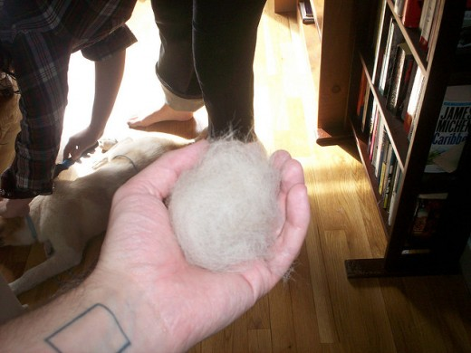

Dogs - Pros and Cons
Advnatages of having dogs as a pet
Despite cats deemed overall to have a more powerful brains, dogs showed greater ability to understand commands, problem solve and were generally more helpful, it was said.
Cats on the other hand had better acute senses, a smaller carbon footprint and their miaowing and purring was considered less intrusive than dogs barking and whining.
While dogs were thought to bond better with their owners especially as they appeared to offer unconditional love, cats were more independent and needed less care.
This was all down to evolution said the scientists that pointed out that cats were generally loners and dogs pack animals.
However the study admitted that despite the dog advantages, cats remained the most popular domestic animals in the world.
The top 10 cat owning countries in the world had an estimated 204 million felines, compared the top 10 dog owing countries having fewer than 173 million canines.

disadvnatages of having cats as a pet
1. They Shed a Lot
If you choose to bring a cat into your home, be prepared for its hair to get everywhere, including but not limited to your furniture, carpet, clothes, tables, and countertops. Once you adopt a cat, your cleaning schedule may need some tweaking.
2. Their Litter Boxes Smell and Require Cleaning
Cats' urine and excrement are notably stinky, and their toilet is a litterbox, so it doesn't flush. If you want a cat, you need to be able to live with this. Be prepared to clean out the litterbox regularly. Depending on their habits, outside cats may require less frequent litter changes.
3. They May Claw Your Furniture to Shreds
Yes, you can get your cat a scratching post and try any number of methods to dissuade them from scratching the things you care about, but in all likelihood, they will still damage your furniture. If you're lucky, they'll stop there.
4. They May Deter Some People From Visiting Your Home
A surprisingly large amount of people have cat allergies, and some folks are even cat-phobic. This may affect your social or romantic life, especially if you like having people over to your place.
5. Their Veterinary Bills Can Be Very Expensive
If your cat gets sick or injured, you'll have to take them to the vet, and regular checkups are also a must. Veterinary bills have been known to cost some people a small fortune.
Advantages of having a cat as a pet
1.Cats spend much of their time grooming themselves, so you will rarely have to bathe your feline friend. Compared to dogs, cats tend to smell much better. Unlike dogs, your cat won’t go outside and roll in unpleasant things or pick a fight with a skunk. Because cats are so good at keeping themselves clean, they usually feel softer and cleaner than dogs and many other animals when you pet them.
2.Kitties are much more self-sufficient than other pets, particularly dogs. Cats don’t need to be taken outside multiple times a day for bathroom and exercise walks. Cats also don’t require nearly as much training as dogs. Cats are also self-cleaning.

Disdvantages of having a dog as a pet
1.This may be an exaggeration, but then again, that could be your reality. If you are eyeing a furry breed, its adorable fluffy self comes with the problematic shedding of fur. As a pet parent, the furs in your shirt, on the couch, all over your living room, under the bed and even the fur in your bed, is typical. Dogs love to freely lounge in unwelcome places and the couch or the bed will never be completely off limits. Maybe that crazy dog movie showing a wild pooch partying on the bed celebrating world domination behind your back is actually based on true-to-life story. You are then left to deal with the aftermath. To help address the issue, regular grooming of the dog is adequate. A good fur cleaning rake or gadget, that can easily be purchased from your friendly neighborhood pet store or online, would also do the trick.
2.Having a dog in the house is similar to having a toddler in the house. And just like taking care of a toddler, a dog especially a pup means loads of poop and pee. This is unavoidable particularly if you will allow the dog to sleep inside the house or until the dog becomes trained. In the first few weeks, the pungent aroma as you approach your living room will no longer be a surprise. The small smelly chunks scattered all over your living room floor will also be a normal spectacle.